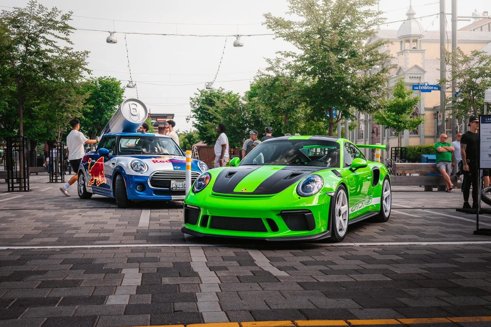
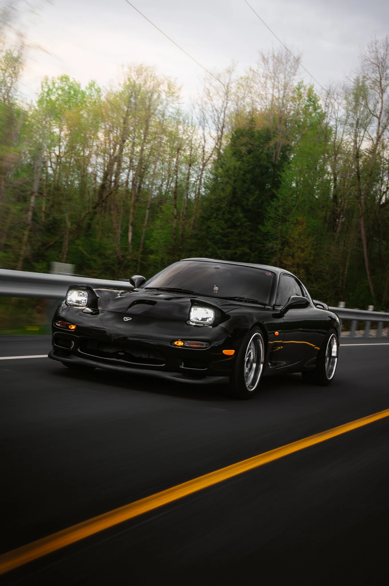
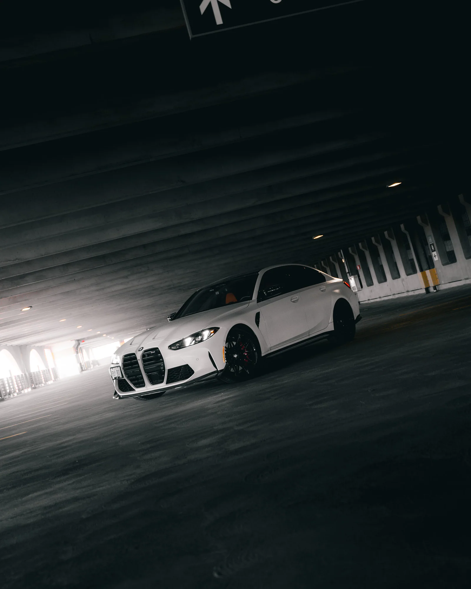
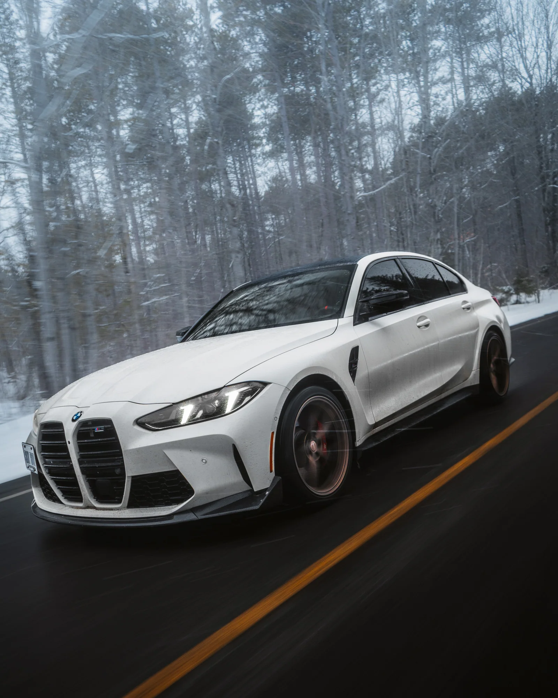

HAVE SOMETHING IN MIND?
Your car could be next.
Events, private shoots and creative projects. Feel free to reach out.




HAVE SOMETHING IN MIND?
Events, private shoots and creative projects. Feel free to reach out.